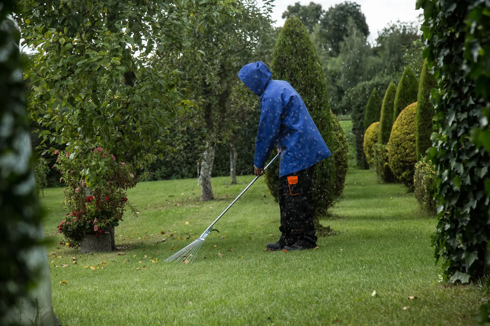
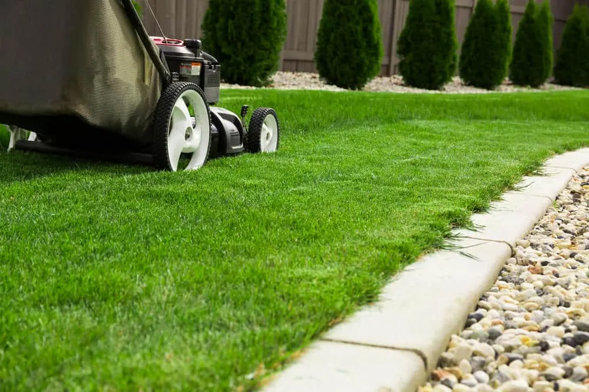
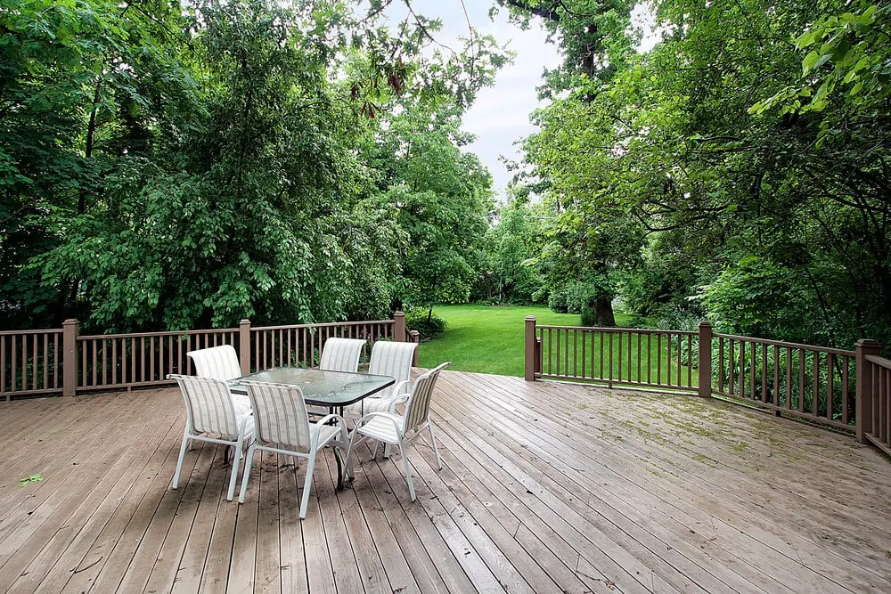
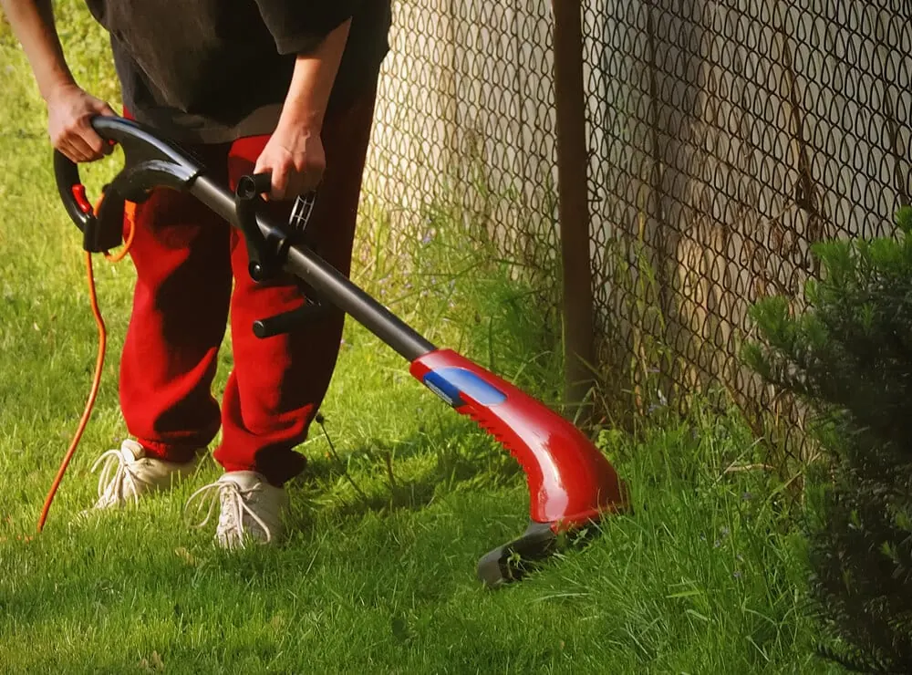
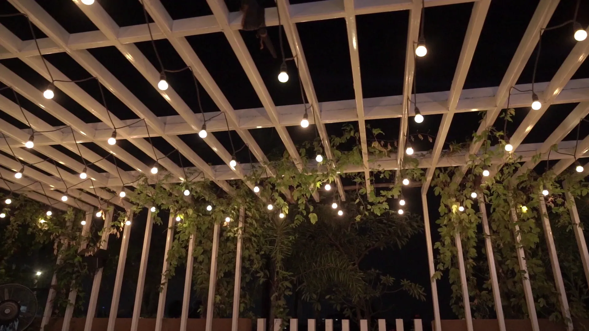

A Look at the Lot First
We walk your Harahan yard before quoting, so the price reflects the trees, beds, and edges you actually have.
At Big Easy Lawn Care, we mow, trim, and clean up yards across Harahan for homeowners and businesses, and we take on landscaping and outdoor living projects too. Many lots here sit beneath old oak and pecan canopies, so we cut with the shade in mind all summer and clear away fallen leaves and nuts each autumn.
A Harahan lawn service plan comes standard with a free consultation at your property, a no-obligation quote, and a fully insured lawn professional to carry out the work. Every plan is backed by our satisfaction guarantee, covers homes and commercial sites alike, and can run as one visit or a standing program managed from your phone.
We walk your Harahan yard before quoting, so the price reflects the trees, beds, and edges you actually have.
The person cutting your grass is a fully insured lawn professional, which protects your home while we work.
Book one round of mowing and weed-eating, or set up a maintenance program that includes regular yard cleanups.
From a family yard off Jefferson Highway to a storefront strip, we size the plan to the property.
Check upcoming service, settle your bill, and add a visit from a phone or web browser, without waiting on a call.
When a visit is not up to standard, let us know and we will come back and put it right.

Harahan homeowners call a yard service when the trees overhead create more work than a weekend can cover. Pecans and leaves drop across the grass in fall, shaded turf thins out, and summer growth pushes edges over walks, so many people hand off the routine and keep their free time for themselves.
Harahan property owners can book lawn and yard maintenance, landscaping, and outdoor living work from us. Maintenance covers cutting, trimming, mulching, weed cutting, washing, and hauling; landscaping covers new builds and restoration; outdoor living covers pergolas, decks, and similar projects. Every service begins with a free estimate at the property.

Routine care that keeps grass, edges, and beds under control through the growing season and the fall drop.

Plantings, beds, and repairs for yards where shade or age has worn the original design down.
Explore Landscaping
Decks, pergolas, and gathering spaces that make a shaded backyard somewhere you want to spend the evening.
Explore Outdoor LivingA Harahan lawn needs help when grass under the trees keeps thinning, when fallen leaves sit on the turf for weeks, or when the mower leaves scalped, uneven patches. Each problem starts small and spreads, and the fix is usually easier when someone catches it early in the season.
LSU AgCenter says most turfgrasses need four to six hours of full sun. Under a wide canopy, grass grows taller and sparser until bare soil shows.
A layer of leaves and hulls blocks light from the grass beneath it. Regular clearing in fall keeps the turf breathing through the cooler months.
LSU AgCenter advises cutting St. Augustine at 2.5 to 3 inches and never taking more than a third of the blade, which prevents scalping.
Mature trees shape lawn care in Harahan because so many yards belong to detached houses shaded by old oak and pecan trees. That canopy cuts the sunlight turf needs, adds a heavy fall cleanup, and favors shade-tolerant grasses such as St. Augustine, cut a little higher so each blade catches more light.

A nearby lawn company matters for Harahan yards because it knows them and is close enough to come back when a storm or a busy fall changes the plan. With us, that means a locally owned business, a free on-site quote, insured professionals, a satisfaction guarantee, and online tools for booking and paying.
Our team is locally owned and works out of an office on Magazine Street.
Your price comes after we see the property, never from a guess over the phone.
Insured professionals do the work, and our satisfaction guarantee stands behind it.
Book, pay, and add visits online, or pick up the phone and talk to us.
From start to finish, lawn service for a Harahan home follows three steps. We start with a free consultation and a no-obligation quote, an insured lawn professional then completes the agreed work, and afterward you handle scheduling, payments, and any extra visits online, so the yard stays on track through every season.
We note the shade, the grass type, the beds, and the gates, then send a written quote.
Your lawn professional mows, trims, and clears what we agreed, then tidies the walks before leaving.
Add a cleanup when the leaves come down, or change the schedule as growth slows.

Before booking lawn care in Harahan, think about how much of the yard sits in shade, whether you want help with fall leaves and pecans, and how often you want visits. Knowing those three things lets us write an accurate quote and plan the first visit around your trees.
Notice which parts of the lawn get several hours of direct sun. The darkest corners may suit mulched beds better than grass.
Decide whether fall pickups should be part of the plan, or booked as needed through clean up and hauling.
We generally recommend weekly or bi-weekly service during peak growing seasons, with fewer visits once growth slows.
The same lawn care we bring to Harahan, from cutting and trimming to mulching and hauling, also reaches New Orleans, Metairie, Kenner, River Ridge, and Gretna, plus Covington, Mandeville, Madisonville, and Abita Springs across the lake. Our team works in each of those neighboring cities as well.
Harahan is a small river city in Jefferson Parish with its own government, police, and fire service.
Harahan takes its name from James Theodore Harahan, who led the Illinois Central Railroad from 1906 to 1911. The city sits along the Mississippi River in Jefferson Parish.
A mayor and a five-member council govern Harahan, and the council meets every third Thursday. City Hall is on Jefferson Highway, and the city has its own police and fire departments.
The 2020 Census counted 9,116 people in Harahan, and a 2025 estimate puts the city at 8,916. They share just 2.02 square miles of land.
Harahan's outings include a levee trail, a memorial park, and a festival in the fall.
The Mississippi River Trail follows the levee past Harahan, so cyclists can ride downriver toward Audubon Park. Heading the other way takes riders upriver toward Bonnet Carré.
The Park of Heroes is a memorial to service members from Vietnam, Korea, World War II, and Operation Iraqi Freedom. Dedicated in 2025, it honors 16 Harahan natives who died in those conflicts.
Each autumn the city holds a Pecan Festival. Harahan Rec runs sports leagues and rents out recreation shelters for gatherings.
Jefferson Highway ties Harahan to its closest neighbors, and the E3 bus runs that whole stretch.
The parish tourism office lists Harahan and River Ridge together as one community entry. The E3 bus makes a timed stop at Jefferson Highway and Little Farms Avenue in River Ridge.
The E3 Jefferson Highway line starts in Kenner, with no transfer needed from Harahan. Kenner, established in 1855, is home to Louis Armstrong New Orleans International Airport.
The E3 finishes at Claiborne and Carrollton Avenues in New Orleans. Riders there can transfer to RTA routes that continue into the city.
A historic school, a landmark bridge, and even a soil type carry Harahan's story.
Harahan Elementary on Jefferson Highway opened to students in 1926. It joined the National Register of Historic Places in 1983.
The Huey P. Long Bridge at Harahan was the first in Louisiana to span the Mississippi. Centuries old oaks and pecans line the city's streets and have become its symbols.
The USDA recognizes a clay soil series called Harahan, established in 1981 in Jefferson Parish. The city itself holds about 4,517 people in each square mile.

JP Transit, the Jefferson Parish bus system, serves Harahan along Jefferson Highway seven days a week.
The E3 runs from Kenner to Carrollton Avenue in New Orleans, with stops about every two blocks. One of those stops sits at Harahan City Hall.
The E8 Elmwood route meets the E3, so riders can change lines. At the Carrollton end, riders can connect to RTA service in New Orleans.
The JET Bus Tracker app shows live bus locations, and youth passes load in Le Pass. JP Transit also runs on-demand zones in Metairie and Kenner.
Harahan homeowners mostly ask about St. Augustine, the grass found under so many of their trees: what it is, how it spreads, how to plant and identify it, how tall to keep it, and when to feed it. They also ask what lawn care covers and how to look after a lawn year-round.
Yes, LSU AgCenter describes St. Augustine as a grass that spreads quickly and aggressively through stolons, the runners that creep across the soil surface. In a Harahan yard, that means it will fill thin spots on its own, but it will also push into beds and over curbs unless the edges are trimmed regularly.
Plant it as sod or plugs, because LSU AgCenter notes that no commercial St. Augustine seed is available in Louisiana. Lay sod on a smooth soil surface and water often until it roots, or set plugs about a foot apart, but check how much sun a bare patch under a Harahan oak gets before you replant it.
LSU AgCenter recommends feeding St. Augustine from midspring to midsummer, with no more than 1 pound of nitrogen per 1,000 square feet in a single application and up to 3 pounds a year. Because extra nitrogen speeds growth, a lighter rate can mean less mowing, and a soil test should guide the final numbers.
St. Augustine is a dense, coarse grass with folded, medium-to-dark green leaves that end in a wide, rounded tip, according to LSU AgCenter. Its leaves sit opposite each other along thick runners, while centipede and carpetgrass have narrower leaves, which helps when you are working out which grass a Harahan yard has.
St. Augustine is a perennial warm-season turfgrass that LSU AgCenter calls a common, popular choice for Louisiana homeowners. It suits warm, humid weather, handles cold poorly, and tolerates shade better than other warm-season grasses, which is why it shows up so often in Harahan yards growing under mature oaks and pecans.
LSU AgCenter recommends mowing St. Augustine at 2.5 to 3 inches during the growing season and never cutting off more than a third of the blade at once. In the shadier parts of a Harahan yard, keep it toward the upper end, since a slightly taller blade catches more of the limited light.
Lawn care is the routine work that keeps grass and the yard around it healthy: mowing, trimming, edging, weed cutting, mulching beds, and clearing debris. For our Harahan customers, it also means planning around tree shade and the fall leaf drop, and it can range from a single cleanup visit to an ongoing maintenance program.
Mow at the right height for your grass, never remove more than a third of the blade, and water deeply only when dry spells stress the turf, as LSU AgCenter advises. Base fertilizer and any pH changes on a soil test, and in a shaded Harahan yard, keep traffic light on the grass under trees.
Join our satisfied and happy customers. Get your free lawn care assessment today.